lorenz_partial_25d_additive_mse_uniform_p30__lc_sweepProject: Lorenz_INDpartial_N25_D1_NormTrue_T3__JacobianODE
Launched: 2026-04-15T15:38:00Z
Completed: 2026-04-15T19:50:13Z
Outcome: complete_clean
Git: latent-JacobianODE @ 325ada0
Expected runs: 9
lorenz_partial_25d_additive_mse_uniform_p30Description
Identical to lorenz_partial_25d_additive_mse_uniform but with prediction_steps=30 (seq_length=45) for a stronger multi-step training signal.
Hypothesis
The p30 + most_recent partial_25d sweep still underestimated the strong-contraction Lyapunov exponent. Adding uniform recon on top of p30 should close the gap further: uniform forces z_dyn to reconstruct the full delay window, tightening it onto a proper diffeomorphic chart of the attractor; p30 strengthens the forward rollout constraint. Expecting λ_min closer to empirical ~-14 than either fix alone achieved.
Success criteria
Swept axes (1): training.lightning.loop_closure_weight
Chosen run (by best_traj_loss): z4l1eazh — traj_loss=0.00008, MASE=0.1914, R²=0.9998, LC loss=0.208, epoch=107.0
Swept-axis values at chosen run: training.lightning.loop_closure_weight=1.0e-05
Runs analyzed: 9 (expected 9)
| run_idx | run_id | training.lightning.loop_closure_weight |
best_traj_loss | best_MASE | R² | LC loss | epoch |
|---|---|---|---|---|---|---|---|
| 2 | z4l1eazh |
1.0e-05 | 0.00008 | 0.1914 | 0.9998 | 0.208 | 107.0 |
| 3 | brnsc37d |
1.0e-04 | 0.00010 | 0.2067 | 0.9997 | 0.048 | 102.0 |
| 1 | btaured2 |
1.0e-06 | 0.00012 | 0.2531 | 0.9996 | 0.279 | 70.0 |
| 4 | pd8hhmyv |
0.001 | 0.00013 | 0.2736 | 0.9996 | 0.006 | 102.0 |
| 0 | 7fdqopax |
0 | 0.00017 | 0.2797 | 0.9995 | 0.313 | 64.0 |
| 5 | kla2hl9w |
0.01 | 0.00027 | 0.3648 | 0.9992 | 0.001 | 109.0 |
| 6 | vemccm07 |
0.1 | 0.00073 | 0.5963 | 0.9977 | 0.000 | 112.0 |
| 7 | 4dzm6954 |
1 | 0.00126 | 0.8026 | 0.9961 | 0.000 | 112.0 |
| 8 | 37nbvfaw |
10 | 0.00215 | 1.0895 | 0.9933 | 0.000 | 105.0 |
| Criterion | Verdict | Note |
|---|---|---|
| λ_min noticeably more negative than the p30+most_recent baseline | Unknown | |
| val/trajectory_r2 at best LC within a few % of the most_recent p30 baseline | Unknown | |
| No loop-closure explosion under uniform training | Unknown |
Automated verdicts use simple numeric-threshold parsing and may mis-classify qualitative criteria. The Discussion section below takes precedence.
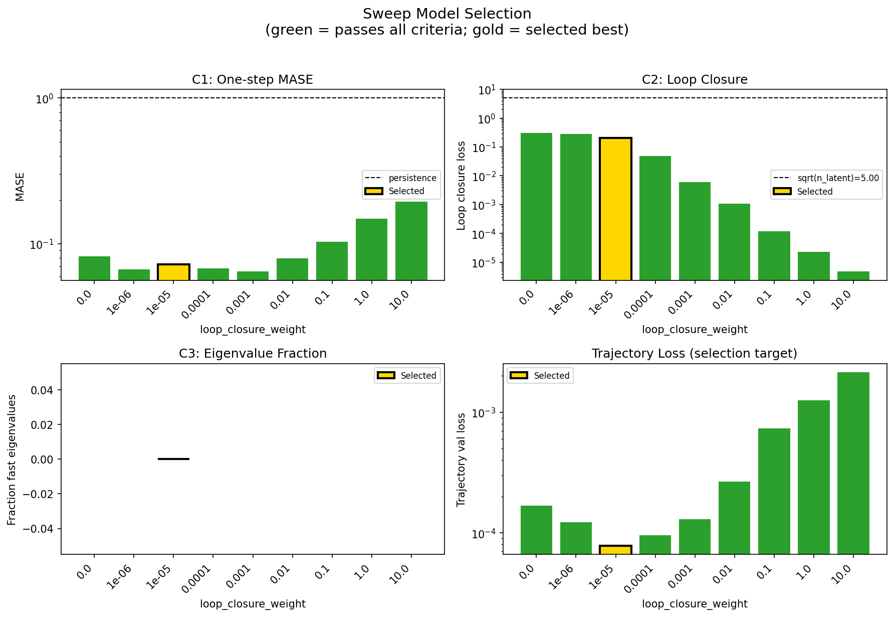
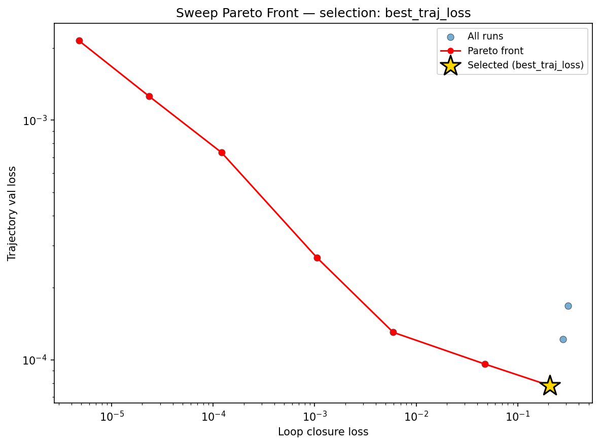
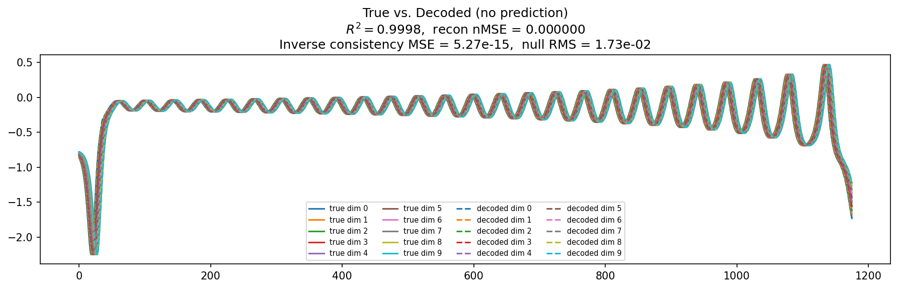
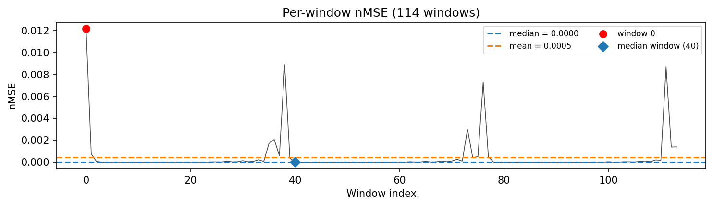
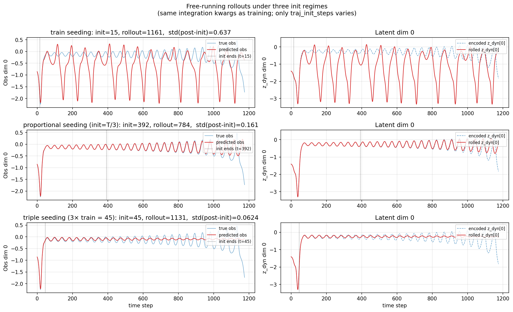
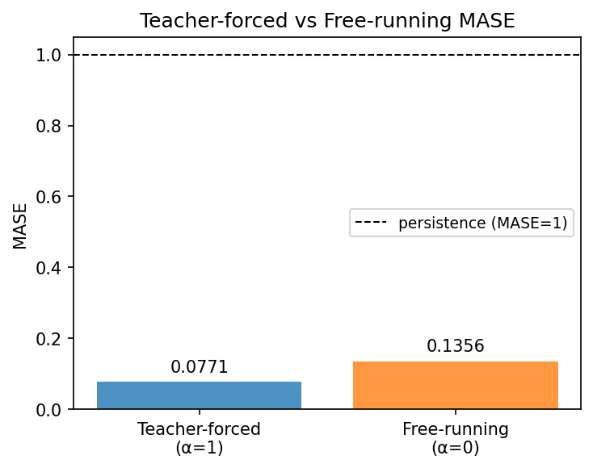
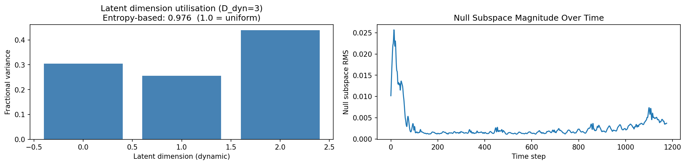
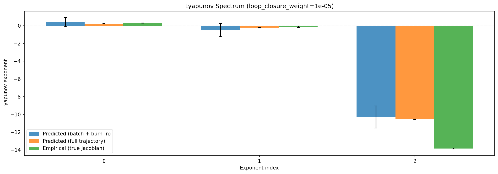
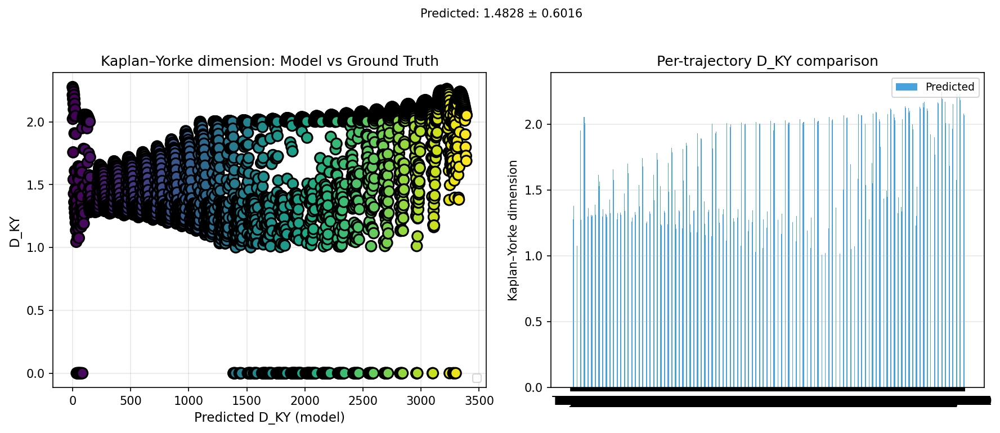
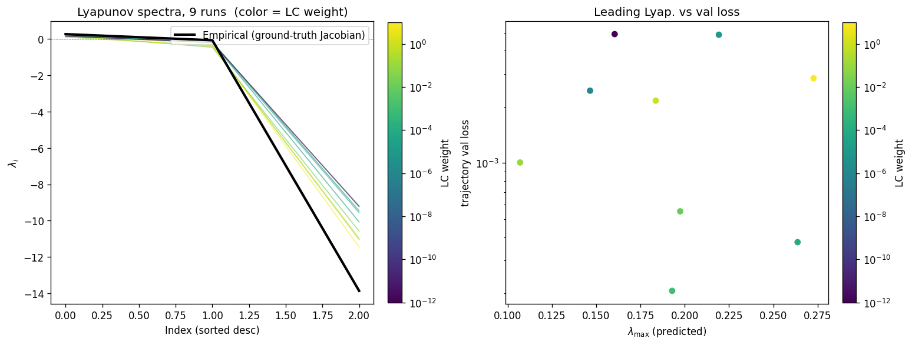
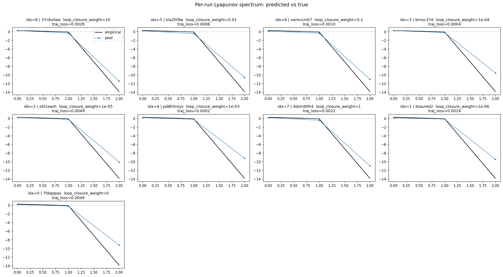
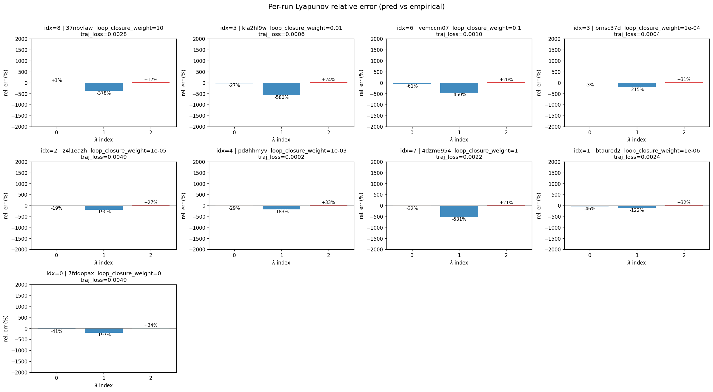
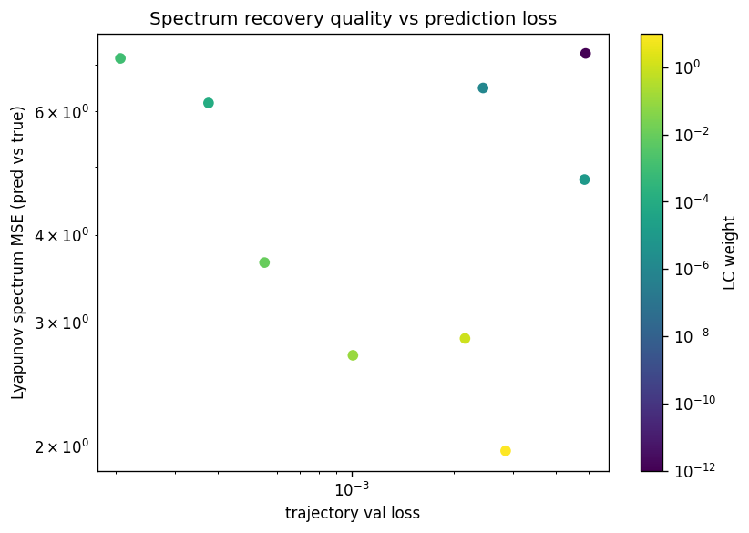
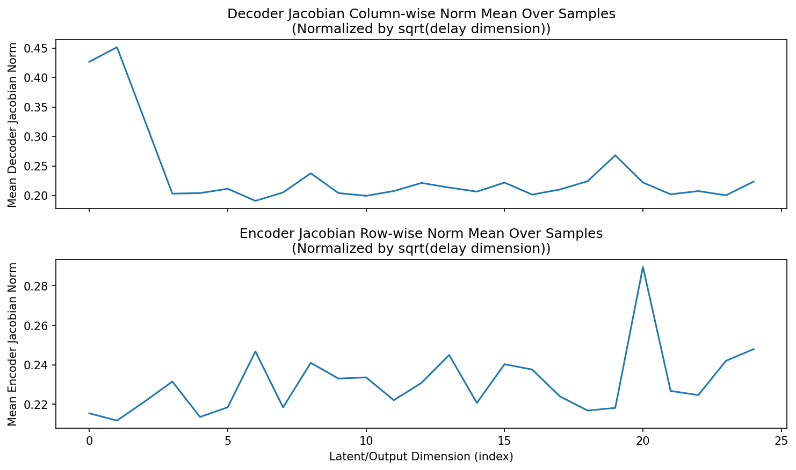
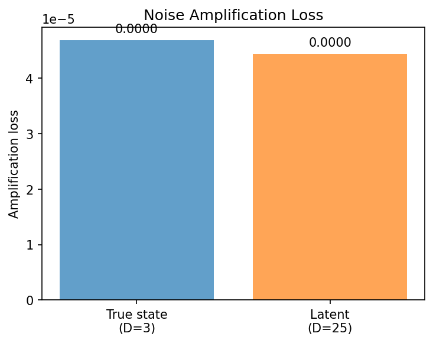
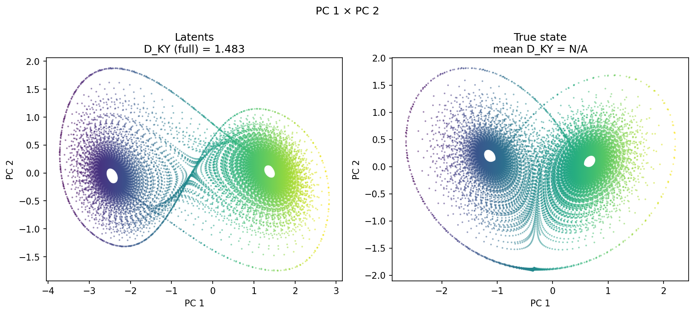
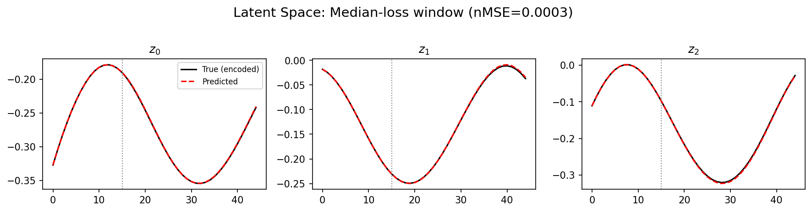
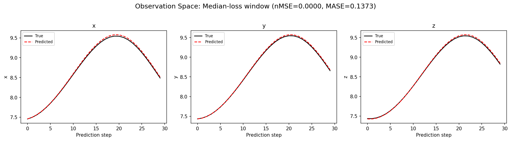
(to be written)
run_analytics stdoutrun_analyticsNo run_id provided — selecting best run from group 'lorenz_partial_25d_additive_mse_uniform_p30__lc_sweep' ...
Found 9 total runs in JacobianODE/Lorenz_INDpartial_N25_D1_NormTrue_T3__JacobianODE (group=lorenz_partial_25d_additive_mse_uniform_p30__lc_sweep)
All runs (state, loop_closure_weight, tangent_entropy_weight, kl_dyn_weight):
37nbvfaw: state=finished, lc=10.0, te=0.0, kl_dyn=0.0
kla2hl9w: state=finished, lc=0.01, te=0.0, kl_dyn=0.0
vemccm07: state=finished, lc=0.1, te=0.0, kl_dyn=0.0
brnsc37d: state=finished, lc=0.0001, te=0.0, kl_dyn=0.0
z4l1eazh: state=finished, lc=1e-05, te=0.0, kl_dyn=0.0
pd8hhmyv: state=finished, lc=0.001, te=0.0, kl_dyn=0.0
4dzm6954: state=finished, lc=1.0, te=0.0, kl_dyn=0.0
btaured2: state=finished, lc=1e-06, te=0.0, kl_dyn=0.0
7fdqopax: state=finished, lc=0.0, te=0.0, kl_dyn=0.0
slurm_timeout_min not found in any run config — falling back to 180 min
Including 37nbvfaw (lc=10.0): use_all_runs=True (state=finished)
Including kla2hl9w (lc=0.01): use_all_runs=True (state=finished)
Including vemccm07 (lc=0.1): use_all_runs=True (state=finished)
Including brnsc37d (lc=0.0001): use_all_runs=True (state=finished)
Including z4l1eazh (lc=1e-05): use_all_runs=True (state=finished)
Including pd8hhmyv (lc=0.001): use_all_runs=True (state=finished)
Including 4dzm6954 (lc=1.0): use_all_runs=True (state=finished)
Including btaured2 (lc=1e-06): use_all_runs=True (state=finished)
Including 7fdqopax (lc=0.0): use_all_runs=True (state=finished)
Found 9 effectively-done sweep runs:
loop_closure_weight=0.0, tangent_entropy_weight=0.0, kl_dyn_weight=0.0 -> run_id=7fdqopax
loop_closure_weight=1e-06, tangent_entropy_weight=0.0, kl_dyn_weight=0.0 -> run_id=btaured2
loop_closure_weight=1e-05, tangent_entropy_weight=0.0, kl_dyn_weight=0.0 -> run_id=z4l1eazh
loop_closure_weight=0.0001, tangent_entropy_weight=0.0, kl_dyn_weight=0.0 -> run_id=brnsc37d
loop_closure_weight=0.001, tangent_entropy_weight=0.0, kl_dyn_weight=0.0 -> run_id=pd8hhmyv
loop_closure_weight=0.01, tangent_entropy_weight=0.0, kl_dyn_weight=0.0 -> run_id=kla2hl9w
loop_closure_weight=0.1, tangent_entropy_weight=0.0, kl_dyn_weight=0.0 -> run_id=vemccm07
loop_closure_weight=1.0, tangent_entropy_weight=0.0, kl_dyn_weight=0.0 -> run_id=4dzm6954
loop_closure_weight=10.0, tangent_entropy_weight=0.0, kl_dyn_weight=0.0 -> run_id=37nbvfaw
n_dims=25, n_latent=25, n_dyn=3, dt=0.0150
run=7fdqopax: DiagnosticMetrics(one_step_mase=0.08204861730337143, loop_closure_loss=0.3130567967891693, fast_eigenvalue_fraction=0.0, trajectory_val_loss=0.00016815440903883427) (from cache, n_batches=100)
run=btaured2: DiagnosticMetrics(one_step_mase=0.0669427439570427, loop_closure_loss=0.2788337469100952, fast_eigenvalue_fraction=0.0, trajectory_val_loss=0.000122126642963849) (from cache, n_batches=100)
run=z4l1eazh: DiagnosticMetrics(one_step_mase=0.0720352977514267, loop_closure_loss=0.20773859322071075, fast_eigenvalue_fraction=0.0, trajectory_val_loss=7.800250023137778e-05) (from cache, n_batches=100)
run=brnsc37d: DiagnosticMetrics(one_step_mase=0.06765209883451462, loop_closure_loss=0.04772041365504265, fast_eigenvalue_fraction=0.0, trajectory_val_loss=9.592675633030012e-05) (from cache, n_batches=100)
run=pd8hhmyv: DiagnosticMetrics(one_step_mase=0.06450694054365158, loop_closure_loss=0.00593948969617486, fast_eigenvalue_fraction=0.0, trajectory_val_loss=0.00013018916069995612) (from cache, n_batches=100)
run=kla2hl9w: DiagnosticMetrics(one_step_mase=0.07938936352729797, loop_closure_loss=0.001057978835888207, fast_eigenvalue_fraction=0.0, trajectory_val_loss=0.0002661558100953698) (from cache, n_batches=100)
run=vemccm07: DiagnosticMetrics(one_step_mase=0.10327590256929398, loop_closure_loss=0.00012065684131812304, fast_eigenvalue_fraction=0.0, trajectory_val_loss=0.0007330727530643344) (from cache, n_batches=100)
run=4dzm6954: DiagnosticMetrics(one_step_mase=0.14817920327186584, loop_closure_loss=2.3442826204700395e-05, fast_eigenvalue_fraction=0.0, trajectory_val_loss=0.0012563723139464855) (from cache, n_batches=100)
run=37nbvfaw: DiagnosticMetrics(one_step_mase=0.19463568925857544, loop_closure_loss=4.752790118800476e-06, fast_eigenvalue_fraction=0.0, trajectory_val_loss=0.0021460826974362135) (from cache, n_batches=100)
Ranking method: best_traj_loss
Best run ID: z4l1eazh
Best loop_closure_weight: 1e-05
Best tangent_entropy_weight: 0.0
Best kl_dyn_weight: 0.0
Best traj loss: 0.000078
Criteria applied: ['C1', 'C2', 'C3']
Surviving: 9 / 9
Auto-selected run_id: z4l1eazh
======================================================================
PARETO FRONTIER RUNS (7 runs)
======================================================================
Run ID LC Loss Traj Val Loss
------------ -------------- --------------
37nbvfaw 0.000005 0.002146
4dzm6954 0.000023 0.001256
vemccm07 0.000121 0.000733
kla2hl9w 0.001058 0.000266
pd8hhmyv 0.005939 0.000130
brnsc37d 0.047720 0.000096
z4l1eazh 0.207739 0.000078 <-- selected
======================================================================
RANKING METHOD COMPARISON (over 9 survivors)
======================================================================
Method Run ID LC Loss Traj Val Loss
---------------------- ------------ -------------- --------------
best_traj_loss z4l1eazh 0.207739 0.000078 <-- active
pareto_knee pd8hhmyv 0.005939 0.000130
geo_rank z4l1eazh 0.207739 0.000078
minimax_rank pd8hhmyv 0.005939 0.000130
geo_log_score z4l1eazh 0.207739 0.000078
minimax_log_score kla2hl9w 0.001058 0.000266
======================================================================
Loading run z4l1eazh from JacobianODE/Lorenz_INDpartial_N25_D1_NormTrue_T3__JacobianODE ...
Train dataset shape: torch.Size([24882, 45, 25])
Validation dataset shape: torch.Size([7917, 45, 25])
Test dataset shape: torch.Size([3393, 45, 25])
Train trajectories dataset shape: torch.Size([22, 1176, 25])
Validation trajectories dataset shape: torch.Size([7, 1176, 25])
Test trajectories dataset shape: torch.Size([3, 1176, 25])
Loading checkpoint epoch=107-step=21600.ckpt...
Computing reconstruction ...
Computing MASE ...
Teacher-forced MASE: 0.0771
Free-running MASE: 0.1356
Computing latent utilization ...
Entropy-based utilization: 0.976
Null subspace mean RMS: 4.370893e-03
Computing Lyapunov exponents ...
Computing full-trajectory Lyapunov (3 test trajs, T=1176) ...
Predicted Lyapunov exponents (batch+burn-in, 128 windowed trajs):
λ_1 = +0.4059 ± 0.5081
λ_2 = -0.4962 ± 0.7303
λ_3 = -10.2888 ± 1.2405
Predicted Lyapunov exponents (full-length, 3 test trajs):
λ_1 = +0.2285 ± 0.0059
λ_2 = -0.2195 ± 0.0412
λ_3 = -10.5484 ± 0.0300
Empirical Lyapunov exponents (mean ± std):
λ_1 = +0.2716 ± 0.0605
λ_2 = -0.1016 ± 0.0797
λ_3 = -13.8370 ± 0.0514
Mean KY dim (predicted): 1.962 ± 0.057
Mean KY dim (empirical): 2.012 ± 0.003
Mean KY dim (burn-in): 1.878 ± 0.315
Computing prediction windows ...
Windows: 114 — nMSE min=0.0000, median=0.0000, mean=0.0005, max=0.0122
Computing long-trajectory free-running rollouts ...
Computing encoder/decoder Jacobians ...
encoder_jacobian: (128, 25, 25)
decoder_jacobian: (128, 25, 25)
Computing amplification loss ...
Amplification loss — True state: 0.000047
Amplification loss — Latent: 0.000044